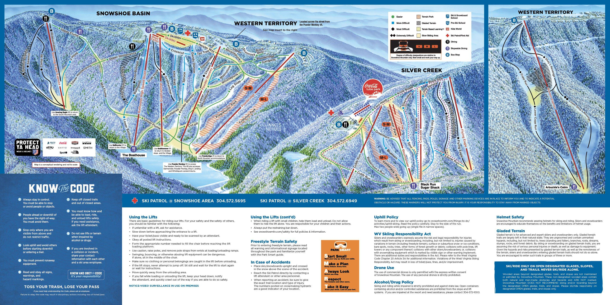

Snowshoe Resort

Map of Snowshoe's trails
Overview
Snowshoe is one of the best mountains the Mid-Atlantic has to offer and a great trip if you're willing to make the drive. What makes it unique is that it's an "upside-down" mountain: the village and lodging are at the very top, so you start your day riding down instead of up. Snowshoe Basin is the main area with plenty of greens and blues plus a couple of terrain parks. If you're more experienced, head over to the Western Territory where Cupp Run and Shay's Revenge drop about 1,500 feet, the biggest vertical in the Mid-Atlantic. Silver Creek is a quieter area a couple miles away that's good for beginners and is open for night riding.
Tips
- The Western Territory is pretty challenging. Beginners should stick to Snowshoe Basin or Silver Creek.
- Weekends and holidays get extremely crowded and the line for Ballhooter can get long. Go midweek if you can.
- Snowshoe is about 4 hours from D.C. and Richmond and the road up the mountain is winding and can be icy. Give yourself extra travel time.
- Cell service on the mountain is spotty so pick a meeting spot with your group ahead of time.
For more information: Snowshoe official website